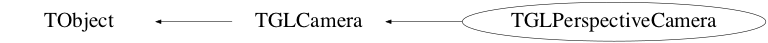

class TGLPerspectiveCamera: public TGLCamera
TGLPerspectiveCamera Perspective projection camera - with characteristic foreshortening.
Function Members (Methods)
public:
protected:
| virtual void | TObject::DoError(int level, const char* location, const char* fmt, va_list va) const |
| void | TObject::MakeZombie() |
| void | TGLCamera::UpdateCache() const |
Data Members
public:
| enum TGLCamera::EFrustumPlane { | kNear | |
| kLeft | ||
| kRight | ||
| kTop | ||
| kBottom | ||
| kFar | ||
| kPlanesPerFrustum | ||
| }; | ||
| enum TObject::EStatusBits { | kCanDelete | |
| kMustCleanup | ||
| kObjInCanvas | ||
| kIsReferenced | ||
| kHasUUID | ||
| kCannotPick | ||
| kNoContextMenu | ||
| kInvalidObject | ||
| }; | ||
| enum TObject::[unnamed] { | kIsOnHeap | |
| kNotDeleted | ||
| kZombie | ||
| kBitMask | ||
| kSingleKey | ||
| kOverwrite | ||
| kWriteDelete | ||
| }; |
protected:
| Bool_t | TGLCamera::fCacheDirty | ! cached items dirty? |
| TGLMatrix | TGLCamera::fCamBase | tranformation to center and rotation from up to x vector |
| TGLMatrix | TGLCamera::fCamTrans | transformation relative to fCamTrans |
| TGLVector3* | TGLCamera::fCenter | ! current camera center |
| TGLMatrix | TGLCamera::fClipM | ! object space clip matrix (cached) |
| TGLVector3 | TGLCamera::fDefCenter | default camera center |
| Double_t | TGLCamera::fDollyDefault | default distnce from viewing centre |
| Double_t | TGLCamera::fDollyDistance | unit distance for camera movement in fwd/bck direction |
| TGLVector3 | TGLCamera::fExtCenter | external camera center |
| Bool_t | TGLCamera::fExternalCenter | use external center insead of scene center |
| TGLVector3 | TGLCamera::fFDCenter | fixed default camera center |
| Double_t | TGLCamera::fFarClip | ! last applied far-clip |
| Bool_t | TGLCamera::fFixDefCenter | use fixed default center |
| TGLPlane | TGLCamera::fFrustumPlanes[6] | ! frustum planes (cached) |
| TGLBoundingBox | TGLCamera::fInterestBox | ! the interest box - created in UpdateInterest() |
| Double_t | TGLCamera::fLargestSeen | ! largest box diagonal seen in OfInterest() - used when |
| TGLMatrix | TGLCamera::fLastNoPickProjM | ! no-pick projection matrix (cached) |
| TGLMatrix | TGLCamera::fModVM | ! modelView matrix (cached) |
| Double_t | TGLCamera::fNearClip | ! last applied near-clip |
| TGLMatrix | TGLCamera::fProjM | ! projection matrix (cached) |
| UInt_t | TGLCamera::fTimeStamp | ! timestamp |
| Float_t | TGLCamera::fVAxisMinAngle | minimal allowed angle between up and fCamTrans Z vector |
| TGLRect | TGLCamera::fViewport | ! viewport (GL coords - origin bottom left) |
| Bool_t | TGLCamera::fWasArcBalled | set when arc-ball rotation is used |
| static UInt_t | TGLCamera::fgDollyDeltaSens |
Class Charts



Function documentation
void Setup(const TGLBoundingBox& box, Bool_t reset = kTRUE)
void Reset()
Bool_t Zoom(Int_t delta, Bool_t mod1, Bool_t mod2)
Zoom the camera - 'adjust lens focal length, retaining camera position'. Arguments are: 'delta' - mouse viewport delta (pixels) - +ive zoom in, -ive zoom out 'mod1' / 'mod2' - sensitivity modifiers - see TGLCamera::AdjustAndClampVal() Returns kTRUE is redraw required (camera change), kFALSE otherwise.
void Apply(const TGLBoundingBox& box, const TGLRect* pickRect = 0) const
Apply the camera to the current GL context, setting the viewport, projection and modelview matricies. After this verticies etc can be directly entered in the world frame. This also updates the cached frustum values, enabling all the projection, overlap tests etc defined in TGLCamera to be used. Arguments are: 'box' - view volume box - used to adjust near/far clipping 'pickRect' - optional picking rect. If non-null, restrict drawing to this viewport rect.
void Configure(Double_t fov, Double_t dolly, Double_t* center, Double_t hRotate, Double_t vRotate)
Configure the camera state. fov - set directly field-of-view in degrees (default = 30); dolly - additional move along the camera forward direction; center - new camera center (can be 0 for no change); hRotate - additional "up/down" rotation in radians; vRotate - additional "left/right" rotation in radians.